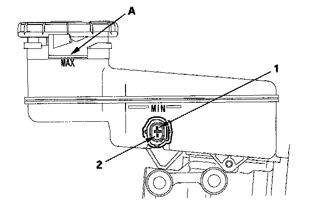

Brake Fluid Level Sensor/Switch: Testing and Inspection
Brake Fluid Level Switch TestCheck for continuity between the terminals (1) and (2) with the float in the down position and in the up position.
NOTE:
^ Remove the brake fluid completely from the reservoir. With the float down, there should be continuity.
^ Fill the reservoir with brake fluid to the MAX (upper) level (A). With the float up, there should be no continuity.
^ If both the ABS/VSA indicator and the brake system indicator come on at the same time, check the VSA system first.
^ If the parking brake switch and fluid level switch are OK, but the brake system indicator does not function, do the gauge control module test.
